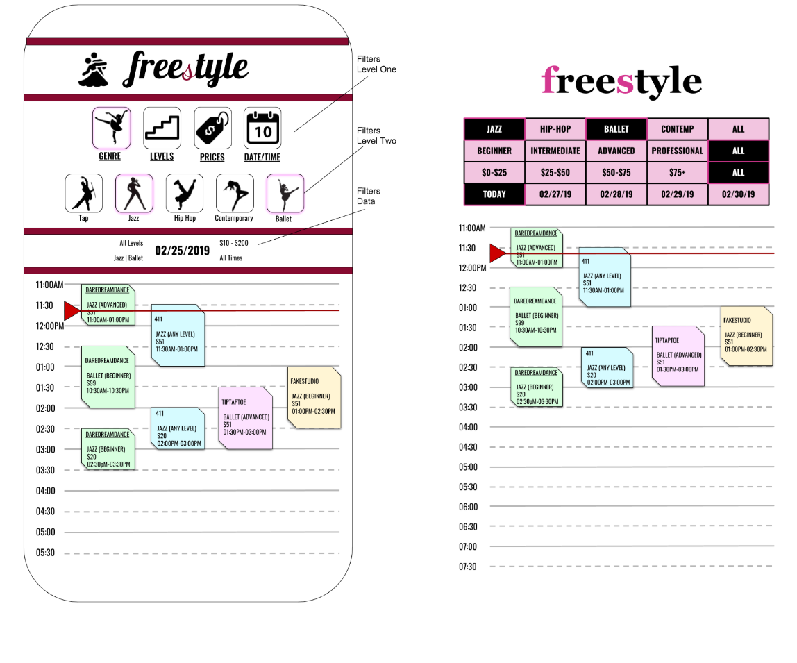

Problem Statement:
A common problem that independent dancers face is finding a studio and/or classes that satisfy both their training needs and interests. In our interface, dancers can view classes from a variety of local studios in one central location, so they can compare offerings and make choices that align with their individual preferences. The platform will allow them to access important details and registration pages for classes offered in their local area, so all they have to do after finding a class, is show up and dance.
Design Overview:
To start, our team brainstormed different solutions to this problem and eventually narrowed these down to a mobile application. We envisioned the product as a mobile application that users can download on a smartphone for on-the-go access to the product.
Mobile apps offer a rich set of interface elements to work with, including gestural controls, which we tended to avoid in preference of more visible options, such as buttons, sliders, icons, etc. In addition, we experimented with presenting the class information within a calendar view. As an affordance of the mobile application medium, this offered the potential for a user to add any class they’re interested in as an appointment to their calendar, directly from our application. This feature could offer great convenience for the user in the event that they use a calendar for scheduling already. It could then potentially tie into such additional features as reminders and notifications that, while useful, our app is not necessarily trying to include. A mobile app would integrate with a user’s process of time- and schedule-management, if they have one. However, the application must also decide both whether and how often to notify the user when new information is available. Mobile apps have powerful abilities for notifying the owner of the device. Although the problem doesn’t necessarily need to be solved at this stage of the design, this did inform the design in the inclusion of elements like the calendar view.
For the initial draft, we did not want to overload the user with too much information or too many options to choose from. We wanted clear filtering options that were easy to choose and change, while displaying a full day’s worth of classes that clearly showed which classes were available. We took what our dance expert told us was the most pivotal information that dancers are looking for and combined them alongside what new dancers would be looking for to choose the four filtering options. Initially, there was no way to see all the filters that were chosen at once, so after the user had chosen all their options, they would have to remember them or try to decipher them in the results. The calendar was the main focal point of the main screen to show a clean minimalistic view of all the available classes on the specific date.The most critical design problem was screen real estate. Trying to fit multiple classes that occurred concurrently from a multitude of studios in a view with limited horizontal space became convoluted and messy. Originally, the idea was to have the ability to swipe left or right directly on the calendar to change dates. To showcase this ability, the left and right ends of the view would show parts of the previous and later dates. This also took up horizontal space on the calendar, furthering the problem. In order to remedy a part of this, the actual classes shown displayed only the very basic information, prompting the user to click on the item to receive a pop-up display that would show more specific details about the class, as shown in Figure 4.
The design in Figure 5 remedied some of the problems stated above by adding feedback of what the users have chosen in the middle of the application with words surrounding the date in the Filters Data. The number of studios were limited to four and color coded so users could easily recognize which studio offered the different classes and the ability to swipe left and right were removed from the calendar view to free up screen real estate. A couple of different ideas were toyed around with to come to this final design, such as Figure 6, where all the icons were changed to smaller buttons to show a larger time table of the day. Another idea to give the calendar view more space was to combine the filter options from two levels to one, swapping in between each other. However, because the second level required the option for the user to be able to select multiple options, a single button press to switch between the two levels was not feasible. The prospect of adding a back button was considered, but felt out of place as the rest of the application did not have a back button anywhere else. In the end, the two levels of filters kept their place from the initial design to keep things simple and accessible, but the height of the levels were reduced to two-thirds of the original design to help make space for the calendar.
Detailed Prototype Description
As mentioned, our prototype focuses on navigating information within a calendar view, which we deemed to be the key functionality of the mobile interface, and what separates it from our other interface design considerations. In appearance, it strongly resembles our initial designs, with several differences one might expect when building a prototype accurate to actual screen dimensions, font sizes, etc., which proved to be much more restrictive than our paper-based designs. As can be seen in Figure 1 below, in which the user first encounters the calendar view of classes, we stuck with presenting information in a daily view and placing available classes side by side, overlapping with their corresponding scheduled times. The decision to associate each particular dance studio both with its own color and column in the calendar view allows users to parse the information quickly and accurately. This is further emphasized in Figure 2, which displays the text of the studio name in its corresponding color. The icons themselves were left in black-and-white, however, in order to avoid interfering with whatever branding may already exist for that studio.
When the user selects a menu item for the first time, by default, everything should be chosen so that the user can originally see all classes that are available. This created a problem where it would be clunky, and because everything was selected, the first selection the user made unselected the item instead of selecting it. For example, when choosing the genre for the first time, the user would at first see that everything is selected, but if they user just wanted to see ballet classes, the use would have to unselect everything but “Ballet” instead of just choosing “Ballet.” Therefore, we decided that if a user is choosing the option for the first time, all classes would be shown on the schedule, but none of the options would be selected initially.

Additionally, displaying the active filters currently being applied to the information was a matter of experimentation. Although included in our original designs, it was separated by solid horizontal stripes, a strong and bold separation that proved too disruptive to the eyes’ natural descent once translated into our prototype. Surrounding it only with whitespace, however, proved problematic as well, since the limited screen real estate didn’t allow enough space to separate it from the calendar, and seemed to be a caption for it (confusing proximity). This led to the rounded corners seen in the final screen, which we felt allowed adequate whitespace while clearly grouping and separating this from the rest of the information on the screen (demonstrating closure).
For a detailed view of a specific class that the user is interested in learning more about, we chose a popup window to display the information. This allows users to rapidly switch between detailed views of different classes, in the absence of enough screen space to display multiple detailed class options side-by-side. More importantly, this allows users to retain their filter options, as the user experience would be harmed if navigating to a different screen required a user to enter them again.
User Testing
Description of Evaluation Techniques and Rationale
The two techniques that were used in conjunction were the think aloud technique and A/B testing. The think aloud method gave us insight into the cognitive process of what the user was thinking when accomplishing their task. This was important and preferable to standard interview questions because some of the users had never tried to do this task before and none of the users had seen the application’s interface. Having a wide variety of users with different levels of technological experience and different exposure to registering for dance classes online required a more in-depth look into the users’ actions that could not be represented in a more formal setting. Using a direct observation method was required for this particular task because the user would be completing the task on a wireframe prototype, which would create the need for a proctor to make sure that the user did not veer off into parts of the application that were not intended for the task and that users would stay within the flow of the wireframes. A/B testing was used so that we could gather quantitative data on the tasks that the users performed. Having users use the website gave us details on what the current status quo looked like in terms of the existing platforms for registering for dance classes. Measuring the amount of time it took for a user to complete a task gave us comparable numbers to show which method was definitely faster.
Description of Tasks
Users were given a specific class type to register for, and then asked to find a class that fit the given criteria in the app and then on a web browser. The given criteria was a beginner tap dancing class that costs $20 or less. It must have been a class that the user theoretically could have gone to; that is, it must have been in the metro Atlanta area and be for adults. The users were asked to complete the task while “thinking aloud,” talking through their actions and any pain points they were experiencing. They were also allowed to give up at any point. The task was considered complete when the user reached a registration page for a class that fit the given criteria (they did not have to actually register for the class). Since multiple team members administered the test, there were slight variations in testing procedure that could have affected the data. Some of the users tested our app first followed by the current web process, while others completed the two tasks in reverse order. However, it is unlikely that this affected test results, because none of the users were exposed to information that could have helped them in one test or the other. Additionally, some testers allowed more leeway than others regarding when the web search task was completed. The longer web search times were likely influenced by this factor, because these users were held to stricter criteria for task completion than others (i.e. user must find one individual class for $20 or less, as opposed to being allowed to find a set of classes that summed up to $20 or less per class). Even if these data points are removed from the set, there are enough data points to draw preliminary conclusions about the app and its effectiveness.
Description of Users
We tested with 17 users, all from our target age demographic (18-35 years old). The users were recruited either through the local dance community of Atlanta, or through being friends with members of our team. One of our team members is a dancer, so she was able to test other people that she dances with. The group of users included both men and women, as well as dancers (eight users) and non-dancers (eight users). In addition, some of the users’ first language was not English, so this may have caused some additional frustration.Current dancers are the most likely users of the application, so the data from those tests likely presents a more accurate comparison of our app and the current process for finding dance classes. However, the non-dancers’ lack of familiarity with local studios and class offerings illustrated many of the difficulties and frustrations with the current process of finding a class. If this had been a real exercise for the non-dancers to register for their first dance class, many of them would have had a lot of difficulty and potentially even given up on the prospect of finding a class.
Results of Studies
Figure 1 below shows the raw results of the user tests as a scatter plot. It plots the time that users took to complete the task with the app versus with a web search. It also distinguishes between experience levels with color (dancer, non-dancer, and prior dancer). For the most part, non-dancers took the longest to complete both tasks, especially the web search task. App search time had much less variation than web search time.

Figure 2 below shows the raw results of user tests for the web search task in a box and whisker plot. The data is divided by user type (dancer, non-dancer, and all users), excluding the one prior dancer. Dancers had a much smaller range of times, as well as a shorter median time to complete the task. Even with two outliers removed, the non-dancers’ slower times skew the data.

Figure 3 below shows the raw results of user tests for the web search task in a box and whisker plot. The data is divided by user type (dancer, non-dancer, and all users), excluding the one prior dancer. In the app, time for task completion did not vary nearly as much as it did for the web task. While non-dancers had a larger range and a longer median time, it did not skew the overall data that much. The total median is very similar (slightly higher) than the median for dancers, and the total range is a little larger.

Implications of the Results with respect to Design
Our biggest challenge throughout this process revolved around limited screen real estate. We wanted to fit many different things onto one phone screen, which is difficult to do without overcrowding the screen or reducing text legibility. This might have been mitigated by a different design, perhaps hiding some of the menu options to allow the schedule to take up more of the screen. Had we more experience with Adobe XD, we may have been able to accomplish a better version. With more time and prototyping experience, we may make a few additional changes, including changing some of the colors used. In our current design, the logo for each dance studio has been stripped of its original color. This gives the design a more uniform look, because each studio has a very different logo with very different colors. Finding a way to keep the original logos for the studios would allow them to retain their brand fidelity.
A large source of confusion during app testing was in the view of class information as a calendar. The interaction proved somewhat disorienting to users, as having an app’s entry screen as a calendar is unfamiliar, aside from actual calendar applications. These users would have expected and preferred to start the app with something like a search bar, or a textual display of results. This sort of interface was explored for the desktop version of the interface, and could be easily adapted to the mobile interface used here, with the one added complication of smoothly transitioning from a search view to a calendar view of results. Although not very common, this type of interaction isn’t unheard of in mobile interfaces. One applicable example is the mobile app interface for Google Maps, which features on the opening screen not only the map, but also overlays for searching locations, or viewing a detailed view of any locations selected. From our discussions with our test users, these sorts of elements are what they would have liked to see in the prototype.
In other cases, users had more concrete suggestions about changes for the design of the prototype. The suggestions of the non-dancers tended to focus on usability and background information. For example, an introductory tutorial guiding users through the use of the app, or example videos demonstrating the different styles and genres for those new to dance. These users tended towards features that may exceed the intended focus of the app, towards a complete one-stop resource to learn all about dance. Their suggestions were thought-provoking, but whether they have a place in the focus of the app is up for more experimentation and debate. Lastly, and more generally, users found the color coding of the classes on the calendar to be unclear, and would have liked to have seen something like a legend make it more clear.
Overall, users exhibited positive responses all around to the design and functionality of the app, and encouraged its continued development with suggested improvements to make the app even more functional and intuitive. Even with its flaws, it was preferred over using the web search method.